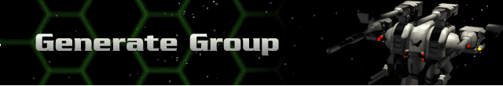
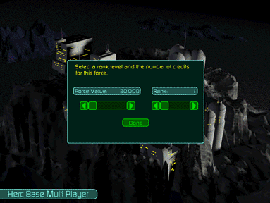

› |
› |
› |
Generate Group |

This is where you create a new fleet of Hercs and Bioderms to do multi-player battle with if you choose not to load a previously saved group. You must set the Rank Level and Force Value in accordance with what the creator is setting for the game. This will be the first dialog box you see when you select the Generate Group option from the Multi-Player Menu. After making these selections, you will be dropped into the Herc Base where you may configure your fleet.
At the Herc Base, the Rank and Force Value are displayed in the upper right corner. When your group numbers are equal to or less than those set by the game’s creator, you may click on Launch Mission. This will take you through a series of dialog boxes to connect you to a game.
